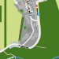

Am Latterbach Haus 14
Am Latterbach Haus 14
Spezielles
Fitnessraum und Volleyballfeld im Garten geteilt mit
Haus 16
Gamer Room
Ort und Kontakt
Anschrift:
Am Latterbach 14,
86971 Peiting-Herzogsägmühle

Das könnte dich auch interessieren
Häuser Am Latterbach
Am Latterbach Häuser 9 und 11
Am Latterbach Häuser 10 und 12
Am Latterbach Haus 13
Am Latterbach Häuser 16 und 18
Mehr interessante Orte entdecken
Startseite
Karte
nirokay.com
›
HzgShowAround